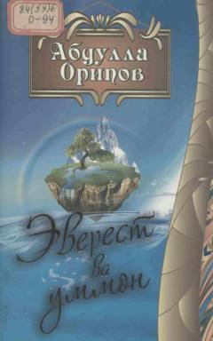

EVAbdulla Oripovning so'nggi yillarda yozilgan she'rlari jamlangan she'riy to'plam.
Ushbu to'plam O'zbekiston Qahramoni va Xalq shoiri Abdulla Oripovning so'nggi yillarda va vafotidan oldin yozgan she'rlarini o'z ichiga oladi. Kitob shoirning ruhiyati, tuyg'ulari va ijodiy dunyosining so'nggi aksini o'quvchilarga taqdim etadi.